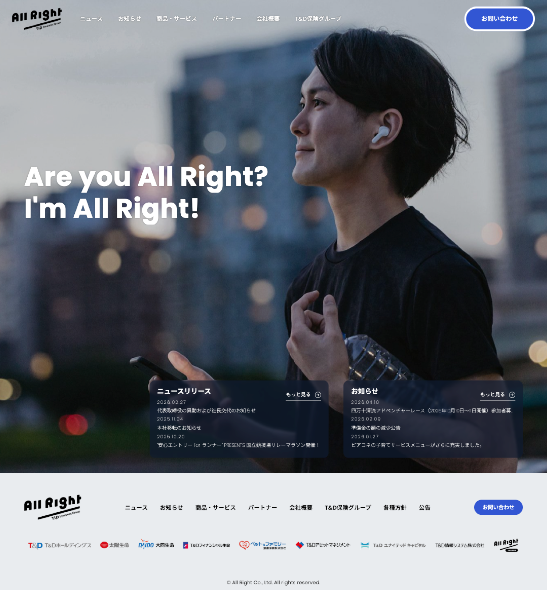
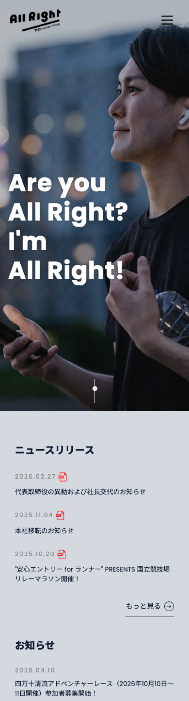
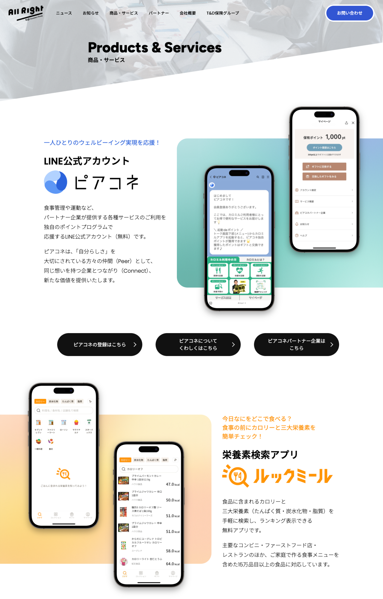
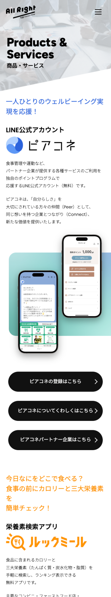

All Right
Corporate Site Renewal
ネオスが株式会社
コーポレートサイトリニューアル
- 担当役割
- Webデザイン ･ コーディング ･ 運用デレクション ･ 運用
- 制作年 ･ 期間
- 2024年 8月 ~ 1月 3カ月
- チーム規模
- ディレクター 1名 Webデザイナー 1名 コーダー 1名 システムエンジニア 1名
- 使用ツール
- Movable Type ･ Figma ･ Illustrator ･ Photoshop ･ HTML ･ CSS ･ JavaScript
Overview
コーポレートサイトのMovable Typeを用いたリニューアルプロジェクトを、ワイヤーフレーム設計から実装 ･ 運用まで1名で一貫して担当。UI全面改善により視認性 ･ 訴求力の向上を実現しました。単独でプロジェクト全体を管理する経験として、制作スピードと品質のバランスを取りながら安定した成果物を納品しました。
All Right T&D Insurance Group
https://all-right.co.jp/



Strategy
- 着手前にサイト全体の構造 ･ コンテンツを整理し、改善優先度を明確化
- ワイヤーフレーム段階でクライアントとの認識を合わせ、後工程での手戻りを防止
- Movable Typeのテンプレート設計を最適化し、更新作業の工数を削減
Key Contributions & Results
- 1名でワイヤー設計 ･ デザイン ･ 実装 ･ 運用を一貫して担当し、全工程の完全掌握を実現
- UI全面改善により、視認性 ･ 訴求力の向上を達成
- 制作スピードと品質を両立し、納期内に安定したアウトプットを納品